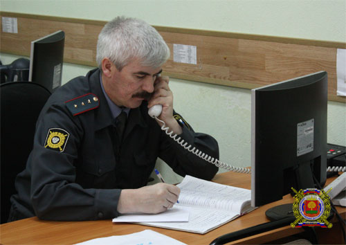

Последние события в жизни «популярного блогера Дмитрия Терновского», наверняка, уже известны всем. Если вдруг кто-то из читателей не признаёт никого кроме меня вкратце расскажу. Известный своим стремлением потроллить охраны рахных ТЦ и универмагов своей неутомимой жизненной позицией и борьбой за права простых людей и людей с фотоаппаратом блогер ехал на днях по Москве и никого не трогал.
Вдруг рядом оказался мерседес, который нарушал. Блогер, достал фотоаппарат, оружие блогера и момент нарушения фотографически зафиксировал. Нарушители не то, чтобы боялись преследований со стороны органов, но в адрес блогера выругались и даже плюнули. Блогер плюнул тоже, и неизвестно какая бы пробка образовалась за этими двумя автомобилями дальше, но хулиганы решили, что плеваться хватит и расстреляли автомобиль Терновского из травматического пистолета. Продолжение истории хорошо известно Гуглу, поэтому пересказывать его дальше не буду.
Отмечу отдельно и остановлюсь лишь на одном факте. За автомобилем с хулиганами числилось до этого очень много правонарушений, тем не менее даже после того, как его объявили в розыск он спокойно проехал два поста ГИБДД, оснащенных между прочим видеокамерами и системами фиксации «Поток». Этот момент пострадавшего очень удивил.
Похоже в некоторых вопросах я всё-таки опытнее товарищей из Москвы, потому что таким вещам я удивлялся последний раз еще лет 8 назад.
Дело было так.
Ранней весной, когда за рулем машины уже можно сидеть в летних ботинках, а ходить в них еще нельзя я подъехал к магазину «Чибис» на перекрёстке Тухачевского-Химиков. Припарковался и пошёл в магазин к банкомату Сбербанка. Стою такой у банкомата никого кроме денего не трогаю, а сигналка такая (с обратной связью) у-у-у-у-у.
Я выбежал, не забыв прихватить наличные и увидел как от машины (она называлась Skoda Octavia (отличный серебристый универсал с турбированным двигателем)). Удаляется зелёная Toyota Prado. Водитель прадика отъезжая от первых в Кемерово новых элиток сдавал задом и упёрся в дверь Октавии, оставив на ней вмятины, а в моей душе шрамы.
Дрожащими от людской невнимательности руками я с дозвонился в дежурную часть и сообщил гос.номер нарушителя. Как вы думаете, что было дальше?
А дальше было вот что.

Скрывшегося всё-таки с места ДТП нарушителя никто даже и не думал искать. Я прождал группу разбора в летних ботинках на снегу 1,5 часа. Сесть в машину было нельзя, потому, что свидетели ДТП, приехавшие из Ленинска, всё время намеревались уехать. Потом, когда они всё-таки уехали я сел вместе с ногами в летних ботинках в машину, но вскоре, приехала группа разбора. Составили, нарисовали. Потом я еще провёл часа 2 в очереди на разбор ДТП на Октябрьском. Инспектор сказал, будем искать.
Искать, на языке инспектора, значило посмотреть по старой телефонной базе адрес владельца автомобиля. Он по старой телефонной базе жил на бульваре Строителей. Инспектор туда даже звонил. Правда никого не застал, ведь владелец жил рядом с «Чибисом», но старая телефонная база этого не знала. Спустя недели две после работы инспектора я с помощью знакомых узнал и реальные телефоны и место работы водителя зелёного Prado. Позвонил инспектору, расследовавшему тёмное дело и поделился информацией. Инспектор «вышел на след» уже на следующий день.
Финал моей истории таков. На встречу в отделение ГИБДД водитель джипа приехал с адвокатом. Сказал, что ничего не знает и будет всё отрицать. Инспектор за словом в карман не полез и сказал, что у нас есть два свидетеля, а за оставление места ДТП положено лишение. Водитель ответил, что готов возместить ущерб, если дело закроют. Адвокат сказал, что если дело не закроют, то неизвестно еще возместит ли мне кто-то ущерб. Я с возмещением ущерба согласился и мы разошлись каждый своей дорогой.